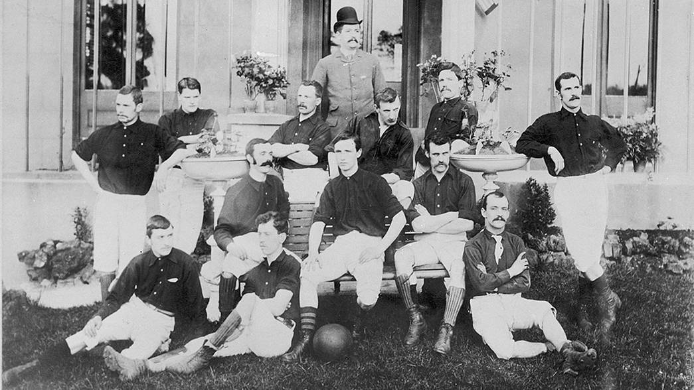

Foundation
In late 1886, a gaggle of workers from the Woolwich Arsenal Armament Factory decided to form a football team.
They called themselves Dial Square as a reference to the sundial atop the entrance to the factory.
On December 11, 1886, Dial Square romped to a 6-0 victory over Eastern Wanderers; the first game in their initial guise. Shortly afterwards the name 'Royal Arsenal' was adopted.